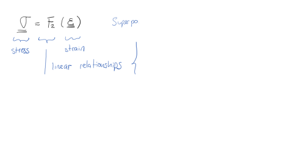

Next: 2.7 WP4: Solution of Up: 2. Continuum mechanics Previous: 2.5 WP3: Horizontal Stresses Contents
[To be developed] VTI compliance matrix (3 - vertical direction perpendicular to bedding):
where and
 and
and  is not related to the other parameters.
is not related to the other parameters.
In terms of stiffness coefficients:
![$\displaystyle E_h = \frac{(C_{11}-C_{12}) \left[ C_{33}(C_{11}+C_{12})-2\: C_{13}^2 \right]}{C_{11}C_{33}–C_{13}^2} $](img34.svg)


VTI stiffness matrix (3 - vertical direction perpendicular to bedding):
or in terms of Young moduli and Poisson ratios
![$\displaystyle C_{11} = \left[ \frac{1}{(1-\nu_h) E_v - 2 \nu_v^2 E_h} \right] \left( \frac{E_h E_v - \nu_v^2 E_h^2}{1+\nu_h} \right) $](img41.svg)
![$\displaystyle C_{12} = \left[ \frac{1}{(1-\nu_h) E_v - 2 \nu_v^2 E_h} \right] \left( \frac{\nu_v^2 E_h^2 + \nu_h E_h E_v}{1+\nu_h} \right) $](img43.svg)
The parameter  is independent of all other parameters.
[To be developed]
![\begin{displaymath}%compliance matrix
\left[
\begin{array}{c}
\varepsilon_{11} ...
...ma_{13} \cfrac{}{}\\
\sigma_{12} \cfrac{}{}
\end{array}\right]\end{displaymath}](img31.svg)
![\begin{displaymath}%compliance matrix
\left[
\begin{array}{c}
\sigma_{11} \\
\...
...\
2 \varepsilon_{13} \\
2 \varepsilon_{12}
\end{array}\right]\end{displaymath}](img40.svg)